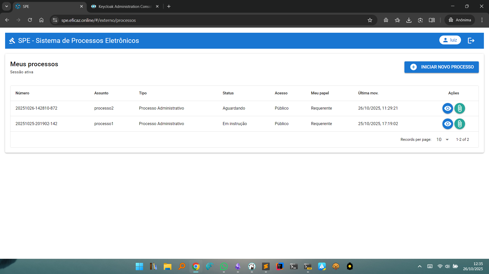
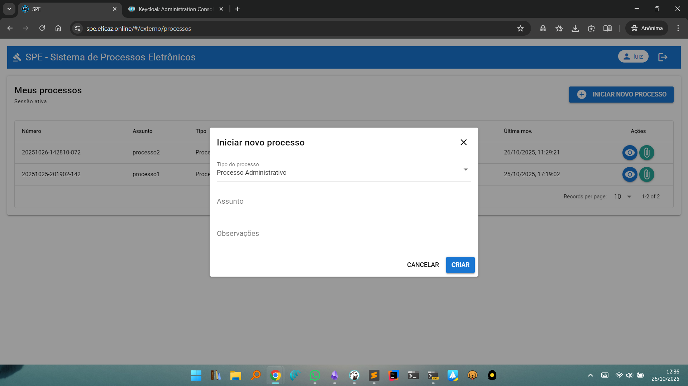
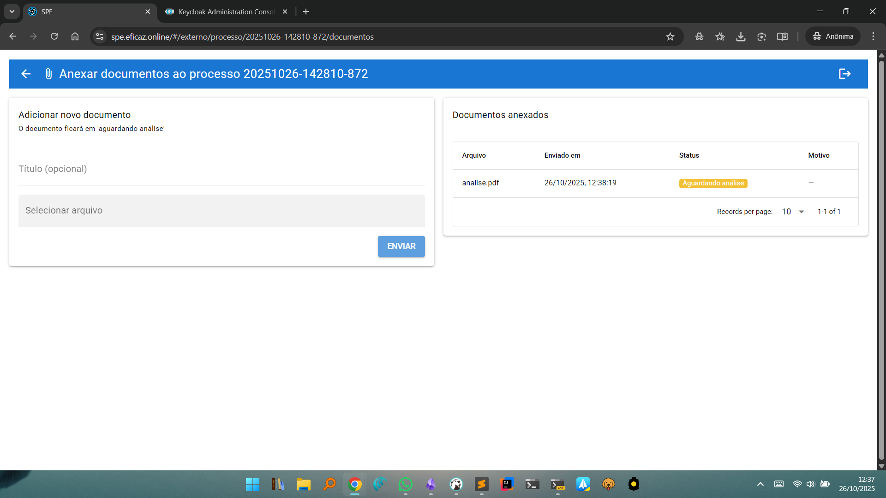

Área do Usuário Externo
Após realizar o login na área externa do SPE, o usuário externo tem acesso a todos os processos nos quais está vinculado, podendo visualizar, acompanhar e alimentar esses processos de maneira simples e segura.
Tela Principal: Meus Processos
Lista de Processos

- Exibe todos os processos em que o usuário aparece como parte interessada.
- Colunas apresentadas:
- Número do processo
- Assunto
- Tipo
- Status (ex: Aguardando, Em instrução)
- Acesso (Público ou restrito)
- Papel do usuário (ex: Requerente)
- Data/hora da última movimentação
- Ações disponíveis:
- Visualizar (ícone de olho): Abre a consulta externa já preenchida com o número do processo selecionado, apresentando uma visão detalhada das informações, andamentos, partes e documentos liberados.
- Documentos (ícone de clipe): Permite anexar novos documentos ao processo selecionado, enviando arquivos para análise da administração responsável.
Iniciar Novo Processo

- O botão INICIAR NOVO PROCESSO permite ao usuário criar um novo processo administrativo, preenchendo no modal:
- Tipo do processo (ex: Administrativo)
- Assunto
- Observações
- Após preencher os campos obrigatórios, clique em CRIAR para cadastrar o processo.
Anexar Documentos ao Processo

- Ao clicar no ícone de clipe de um processo, o usuário é direcionado para a tela de envio de documentos.
- Adicionar novo documento:
- Informe o título (opcional) e selecione o arquivo a ser enviado.
- Clique em ENVIAR para anexar o documento ao processo. O status inicial será "Aguardando análise".
- Documentos Anexados:
- Mostra a lista de arquivos enviados anteriormente, com informações como nome, data de envio, status e motivo.
Observações e Recomendações
- O usuário externo acompanha o progresso de seus processos administrativos, garantindo transparência e acesso simplificado à documentação.
- Para visualizar os detalhes completos de um processo (dados, partes, andamentos, documentos públicos), utilize o botão de visualizar; ele leva à consulta externa já preenchida, facilitando o acesso sem necessidade de reinserir informações.
- Novos documentos adicionados ficarão pendentes até que sejam analisados e validados pelos responsáveis internos do sistema.
Voltar